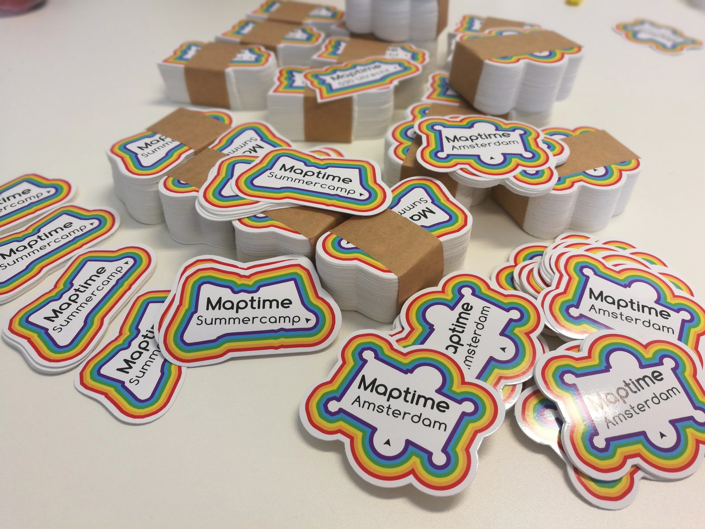

Niene Boeijen

Web Cartographer & Geo ICT developer
Maptime Amsterdam & Utrecht
Internship Geo Web Visualization
Msc Geo Information Science & Remote Sensing
What the map can be
We make interactive maps and visualizations.
Our expertise is open {source; data; standards}
Our power lies in combining cartography with web technology.
Utrecht, The Netherlands
What is Maptime?

Time for making maps!
Maptime is hands on!
maptime.io
Maptime Utrecht
@ SIF, 5 min walk from CS
Who are we?

Niene

Alice

Shravan
Who is helping?


Current status Maptime AMS
566 map lovers on Meetup
400 followers Twitter
16 meetups - 30 participants
and growing!
Upcoming:
8 Nov | Maptime University | Geo-visualization <-
29 Nov | Maptime Utrecht | QGis Workshop <-
13 Dec | Maptime Amsterdam | ChristMapping <-
SWAG!
Contribute!
Ideas, Contacts, Projects ?
Let me know!
niene@webmapper.net
niene@waag.org
Feel free to drop in at our Meetups!
Want to know more?
niene@webmapper.net
niene@waag.org